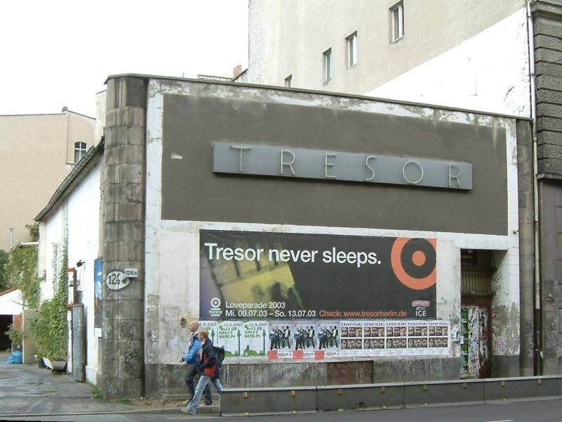

Juan Atkins, 1962 to 2026: the man who named the future
The Detroit producer who gave techno its first records, its first label and its name has died in Mexico City at 64. For four decades he argued that the machines were there to serve the soul.

Juan Atkins, the Detroit producer who laid the first foundations of techno and then gave the music its name, died in Mexico City on Saturday 31 October 2026. He was 64. Atkins was found unresponsive in his hotel room before a scheduled performance at YuYu Cine Club and was pronounced dead after being taken to hospital, according to his agency, Greensmith Artists, which confirmed the death the following day.[1][3] A cause of death has not been reported.[3]
It is hard to overstate how much of the electronic music now played in clubs passes, at some point, through a handful of records Atkins made before he was 25. As one half of Cybotron he made ‘Alleys Of Your Mind’, ‘Cosmic Cars’ and ‘Clear’. As Model 500 he released ‘No UFOs’ in 1985 on Metroplex, the label he founded that year.[1][4] And in 1988, when a compilation set out to introduce the new sound of Detroit to the world, his track ‘Techno Music’ lent the whole movement its name.[1][2]
“Juan was the originator of Techno, a true visionary,” wrote Kevin Saunderson, his friend since junior high school, in a tribute on Instagram.[2][3]
A teenager and a synthesiser
Atkins was born in Detroit in 1962 and moved to the nearby town of Belleville after his parents separated. At Belleville Junior High he met Derrick May and Kevin Saunderson, the two friends with whom his name would be linked for the rest of his life.[4]
He played bass in a funk band and loved Parliament-Funkadelic and George Duke, but the decisive purchase came in his teens: a Korg MS-10, a small monophonic synthesiser.[2][4] Detroit radio supplied the rest. The broadcaster known as The Electrifying Mojo threaded Kraftwerk, Telex, Gary Numan and Giorgio Moroder through his late-night shows, and Atkins listened closely.[4]
He also read. Alvin Toffler’s Future Shock (1970) and The Third Wave (1980) gave him a vocabulary for what he was hearing. Toffler wrote of “techno rebels”, people who master technology rather than being mastered by it, and the phrase stayed with him long enough to become the name of a genre.[4]
Cybotron
Cybotron began in 1980, pairing Atkins with Richard Davis, who recorded as 3070.[1][4] The duo’s first single, ‘Alleys Of Your Mind’, appeared in 1981, and their album Enter followed in 1983.[1][2] Across ‘Cosmic Cars’ (1982), ‘Clear’ (1983) and ‘Techno City’ (1984) they sketched, in a few minutes at a time, the vocabulary of drum machine, sequencer and synthesised bass that club music still speaks.[4]
What made the records unusual was not only their machinery but their temperament. Atkins took the cool precision of European electronic pop and gave it the swing of funk, the result of a Black Midwestern teenager answering Düsseldorf from a car-factory city. Critics have spent forty years trying to describe that combination; he simply recorded it.[4]
Metroplex, and a name
After leaving Cybotron, Atkins went solo as Model 500 and, in 1985, founded Metroplex.[1] The label was more than a vehicle for his own work. It released early music by Saunderson, Eddie Fowlkes and others, and it gave the Detroit sound an address.[2][4] Saunderson later recalled that it was Atkins who showed him how to finish ‘Triangle Of Love’, his first record.[2]
Model 500’s ‘No UFOs’, backed by ‘Night Drive (Thru-Babylon)’, arrived that same year.[4] Then, in 1988, ‘Techno Music’ appeared on the compilation Techno! The New Dance Sound Of Detroit, and the scene had a word it would never shake off.[1][2]
The Berlin connection
If Detroit invented techno, Berlin gave it a second home, and Atkins was among the first to make the crossing. In 1992 he joined Moritz von Oswald and Thomas Fehlmann in the project 3MB, whose ‘Jazz Is The Teacher’ came out on Tresor.[4] Von Oswald engineered his 1995 track ‘Starlight’, and Tresor went on to release albums under his Infiniti alias and his own name.[4] The partnership with von Oswald later took shape as Borderland.[1]
Berlin remembered. In a tribute gathered by the German magazine Groove, Tresor founder Dimitri Hegemann and the club’s team recalled that on the final night at the original Tresor, Atkins’ ‘I Love You’ was played, and then played again straight away.[6] Richie Hawtin wrote that Atkins had imagined techno before any of the rest of them had, and recalled how Atkins welcomed him as a young newcomer. Sven Väth called him a man truly ahead of his time.[6]

Britain listened just as closely. Atkins remixed Liaz in 1987 and went on to rework records by Paul Weller’s Style Council and The Beloved. He worked with 4Hero in 1996, released the album Mind And Body in 1999, and teamed up with Orlando Voorn as Frequency.[4] His was never a closed scene: the music travelled because he kept carrying it to other people.
Never a museum piece
Atkins never settled into the role of living monument. Model 500’s Digital Solutions (2015) was co-produced by Mad Mike Banks of Underground Resistance, and in 2019 he revived Cybotron with Laurens von Oswald and Tameko J. Williams.[4] Asked about that return by DJ Mag, he said he had no interest in picking up where he left off and wanted to present new ideas instead.[2]
Technology is nice, but we don’t wanna become total robots.
He kept working until the end. When he was found, he had been due to play that night in Mexico City.[1][3]
The question of credit
In the days after his death, the sharpest tribute came from Jeff Mills. In a 20-slide statement on Instagram, Mills placed Atkins among a rare group of visionary musicians and wrote that he had “never fully received the recognition or credit he deserved”.[5] Mills also questioned the familiar story of the Belleville Three, arguing that it had become too neat an account of a foundation that Atkins, in his telling, laid first.[5]
Carl Craig once made a similar point to the radio show Beats In Space: Atkins, he said, was making techno before anyone called it that.[4] Derrick May, speaking on video after the news broke, said his friend had been unwell for years without ever mentioning it, and asked people to respect the work.[3]
Mills ended his statement with an image of a bridge into the 21st century that Atkins helped to build, and the observation that it still stands.[5] Anyone who has heard a drum machine and a bassline lock together on a dance floor this year has walked across it.
[ Sources and notes ]
- [ 1 ]Juan Atkins, techno pioneer and Belleville Three member, dies aged 64, Resident Advisor, 1 November 2026.
- [ 2 ]Juan Atkins, Detroit techno pioneer, has died, DJ Mag, 1 November 2026.
- [ 3 ]Juan Atkins, regarded as one of techno music's founding fathers, dead at 64, KTVU FOX 2, 1 November 2026.
- [ 4 ]Juan Atkins RIP: remembering the Detroit techno architect who found connections everywhere, DJ Mag, November 2026.
- [ 5 ]Jeff Mills pays moving tribute to Juan Atkins, We Rave You, 4 November 2026.
- [ 6 ]Zum Tod von Juan Atkins: "Er hat Techno erdacht, bevor es irgendeiner von uns tat", Groove, 4 November 2026.
- [ 7 ]Juan Atkins celebration of life set for Detroit's Lincoln Factory, We Rave You, 18 November 2026.
Researched and drafted with AI tools; fact-checked and edited by Creators Lab editors. How we use AI · Report an error